Partie 8 Représentations graphiques
ggplot2 est une extension du tidyverse qui permet de générer des graphiques avec une syntaxe cohérente et puissante. Elle nécessite l’apprentissage d’un “mini-langage” supplémentaire, mais permet la construction de graphiques complexes de manière efficace.
Une des particularités de ggplot2 est qu’elle part du principe que les données relatives à un graphique sont stockées dans un tableau de données (data frame, tibble ou autre).
8.1 Préparation
ggplot2 fait partie du tidyverse, elle est donc chargée automatiquement avec :
library(tidyverse)On peut également la charger explicitement avec :
library(ggplot2)Dans ce qui suit on utilisera le jeu de données issu du recensement de la population de 2012 inclus dans l’extension questionr (résultats partiels concernant les communes de plus de 2000 habitants de France métropolitaine). On charge ces données et on en extrait les données de 5 départements (l’utilisation de la fonction filter sera expliquée dans la section 9.2.2 de la partie sur dplyr :
library(questionr)
data(rp2012)
rp <- filter(rp2012, departement %in% c("Oise", "Rhône", "Hauts-de-Seine", "Lozère", "Bouches-du-Rhône"))8.2 Initialisation
Un graphique ggplot2 s’initialise à l’aide de la fonction ggplot(). Les données représentées graphiquement sont toujours issues d’un tableau de données (data frame ou tibble), qu’on passe en argument data à la fonction :
ggplot(data = rp)
## Ou, équivalent
ggplot(rp)On a défini la source de données, il faut maintenant ajouter des éléments de représentation graphique. On parle de geom, qui s’ajoute à l’objet graphique de base avec l’opérateur +.
Un des geom les plus simples est geom_histogram. On peut l’ajouter de la manière suivante :
ggplot(rp) + geom_histogram()Reste à indiquer quelle donnée nous voulons représenter sous forme d’histogramme. Cela se fait à l’aide d’arguments passés via la fonction aes(). Ici nous avons un paramètre à renseigner, x, qui indique la variable à représenter (sur l’axe des x). Par exemple :
ggplot(rp) + geom_histogram(aes(x = cadres))## `stat_bin()` using `bins = 30`. Pick better value with `binwidth`.
Si on veut représenter une autre variable, il suffit de changer la valeur de x :
ggplot(rp) + geom_histogram(aes(x = ouvr))## `stat_bin()` using `bins = 30`. Pick better value with `binwidth`.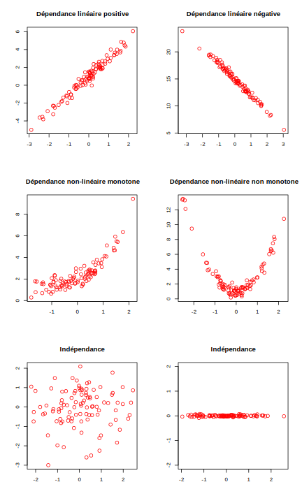
Inutile d’indiquer le nom du data frame sous la forme rp$ouvr, car ggplot2 recherche automatiquement la variable dans le tableau de données indiqué via le paramètre data.
Certains geom prennent plusieurs paramètres. Ainsi, si on veut représenter un nuage de points avec geom_point, il faut indiquer à la fois la position en x et en y de ces points. On passe alors ces deux arguments à aes() :
ggplot(rp) + geom_point(aes(x = dipl_sup, y = cadres))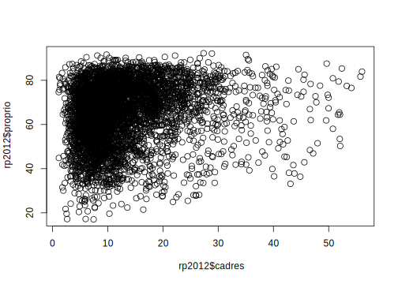
On peut modifier certains attributs graphiques d’un geom en lui passant des arguments supplémentaires. Par exemple, pour un nuage de points, on peut modifier la couleur des points avec l’argument color, leur taille avec l’argument size, et leur transparence avec l’argument alpha :
ggplot(rp) +
geom_point(aes(x = dipl_sup, y = cadres),
color = "darkgreen", size = 3, alpha = 0.3)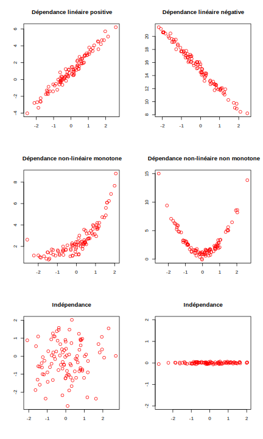
8.3 Exemples de geom
Il existe un grand nombre de geom, décrits en détail dans la documentation officielle. Outre geom_histogram et geom_point, on pourra noter les geom suivants.
8.3.1 geom_boxplot
Permet de représenter des boîtes à moustaches. On lui passe en y la variable dont on veut étudier la répartition, et en x la variable contenant les classes qu’on souhaite comparer.
ggplot(rp) + geom_boxplot(aes(x = departement, y = maison))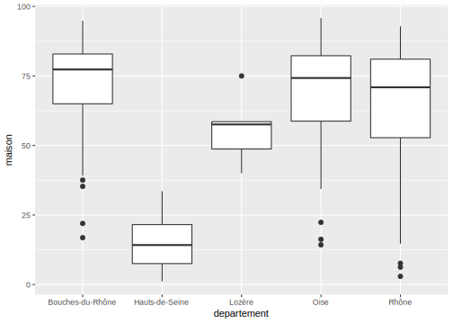
À noter que dans ce cas, x doit être une variable qualitative, et y une variable numérique.
On peut personnaliser la présentation avec différents argument supplémentaires :
ggplot(rp) +
geom_boxplot(aes(x = departement, y = maison), fill = "wheat", color = "tomato4")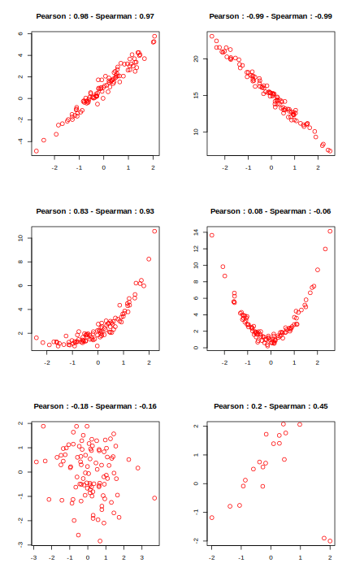
8.3.2 geom_violin
Très semblable à geom_boxplot, mais utilise des graphes en violon.
ggplot(rp) + geom_violin(aes(x = departement, y = maison))
8.3.3 geom_bar
Graphique en bâtons (barplot). On lui passe en x la variable qualitative dont on souhaite représenter l’effectif de chaque modalité.
ggplot(rp) + geom_bar(aes(x = departement))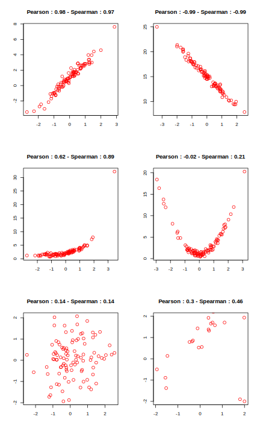
Un cas assez fréquent mais un peu plus complexe survient quand on a déjà calculé le tri à plat de la variable à représenter auparavant. Dans ce cas on souhaite que geom_bar représente les effectifs sans les calculer : cela se fait en indiquant un mappage y pour le variable contenant les effectifs, et en ajoutant l’argument stat="identity".
Ainsi si on a les données sous cette forme :
On peut obtenir le graphique souhaité ainsi :
ggplot(df) + geom_bar(aes(x = departement, y = n), stat="identity")
On peut également modifier l’apparence du graphique avec des argument supplémentaires comme fill ou width :
ggplot(rp) + geom_bar(aes(x = departement), fill = "darkblue", width = .5)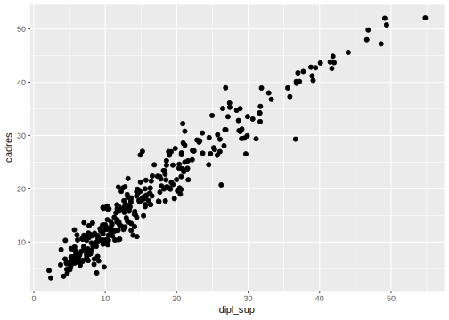
8.3.4 geom_text
Représente des points identifiés par des labels. On doit lui passer x et y pour la position des points, et label pour le contenu des étiquettes.
ggplot(rp) + geom_text(aes(x = dipl_sup, y = cadres, label = commune))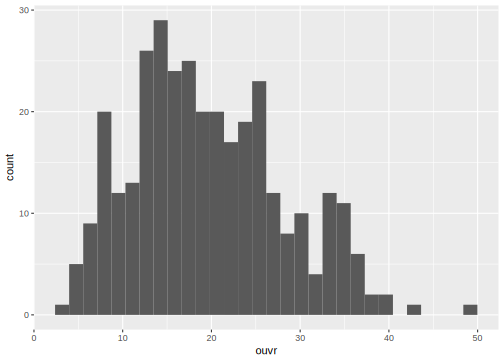
On peut personnaliser l’apparence et la position du texte avec des arguments comme size, color, etc.
ggplot(rp) +
geom_text(aes(x = dipl_sup, y = cadres, label = commune),
color = "darkred", size = 2)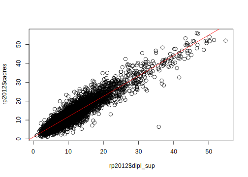
8.3.5 geom_label
Identique à geom_text, mais avec une présentation différente.
ggplot(rp) + geom_label(aes(x = dipl_sup, y = cadres, label = commune))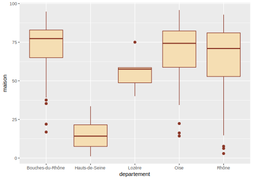
8.3.6 geom_density
Estimation de densité d’une variable numérique. Usage similaire à geom_histogram.
ggplot(rp) + geom_density(aes(x = cadres))8.3.7 geom_line
Trace des lignes connectant les différentes observations.
geom_line connecte les observations selon l’ordre de la variable passée en x.
data("economics")
ggplot(economics) + geom_line(aes(x = date, y = unemploy))
8.4 Représentation de plusieurs geom
On peut représenter plusieurs geom simultanément sur un même graphique. Par exemple, on peut superposer la position des points au-dessus des boîtes à moustaches :
ggplot(rp) +
geom_boxplot(aes(x = departement, y = maison)) +
geom_point(aes(x = departement, y = maison), col = "red", alpha = 0.2)
Pour un résultat un peu plus lisible, on peut remplacer geom_point par geom_jitter, qui disperse les points horizontalement et facilite leur visualisation :
ggplot(rp) +
geom_boxplot(aes(x = departement, y = maison)) +
geom_jitter(aes(x = departement, y = maison), col = "red", alpha = 0.2)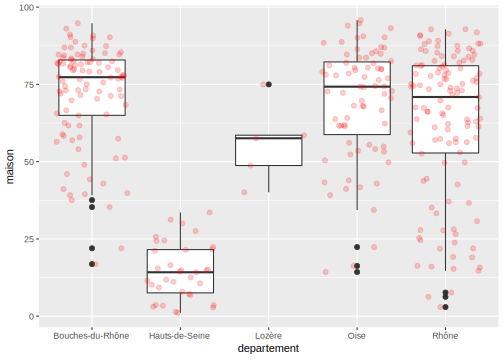
Dans ce cas, plutôt que de déclarer les mappages dans chaque geom, on peut les déclarer dans l’appel à ggplot(). Ils seront automatiquement “hérités” par les geom ajoutés (sauf s’ils redéfinissent les mêmes mappages) :
ggplot(rp, aes(x = departement, y = maison)) + geom_boxplot() + geom_jitter(color = "red", alpha = 0.2)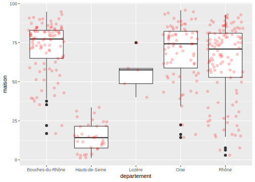
Autre exemple, on peut vouloir ajouter à un nuage de points une ligne de régression linéaire à l’aide de geom_smooth :
ggplot(rp, aes(x = dipl_sup, y = cadres)) +
geom_point(alpha = 0.2) +
geom_smooth(method = "lm")
Et on peut même superposer une troisième visualisation de la répartition des points dans l’espace avec geom_density2d :
ggplot(rp, aes(x = dipl_sup, y = cadres)) +
geom_point(alpha = 0.2) +
geom_density2d(color = "red") +
geom_smooth(method = "lm")
8.4.1 Plusieurs sources de données
On peut aussi associer à différents geom des sources de données différentes via l’argument data. Supposons qu’on souhaite afficher les noms des communes de plus de 50000 habitants. On peut commencer par créer un tableau de données avec seulement ces communes :
com50 <- filter(rp, pop_tot >= 50000)On fait ensuite le nuage de points comme habituellement, et on ajoute un geom_text dont les données sont tirées de ce nouveau data frame :
ggplot(data = rp, aes(x = dipl_sup, y = cadres)) +
geom_point(alpha = 0.2) +
geom_text(data = com50, aes(label = commune), color = "red", size = 3)
8.5 Mappages (aesthetics)
Un mappage est une mise en relation entre un attribut graphique du geom (position, couleur, taille…) et une variable du tableau de données. Ces mappages sont passés aux différents geom via la fonction aes() (abbréviation d’aesthetic).
8.5.1 Exemples de mappages
On a déjà vu les mappages x et y pour un nuage de points. Ceux-ci signifient que la position d’un point donné horizontalement (x) et verticalement (y) depend de la valeur des variables passées comme arguments x et y dans aes() :
ggplot(rp) +
geom_point(aes(x = dipl_sup, y = cadres))
On peut en ajouter d’autres. Par exemple, color permet de faire varier la couleur des points automatiquement en fonction des valeurs d’une troisième variable :
ggplot(rp) +
geom_point(aes(x = dipl_sup, y = cadres, color = departement))
On peut faire varier la taille des points avec size :
ggplot(rp) +
geom_point(aes(x = dipl_sup, y = cadres,
color = departement, size = pop_tot))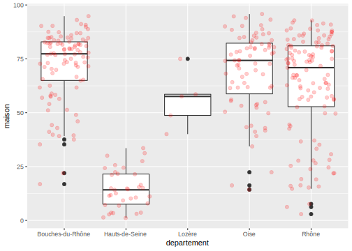
Ou même leur transparence avec alpha :
ggplot(rp) +
geom_point(aes(x = dipl_sup, y = cadres,
color = departement, size = pop_tot, alpha = maison))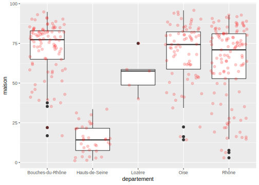
Chaque geom possède sa propre liste de mappages.
8.5.2 aesthetic or not aesthetic ?
Parfois on souhaite changer un attribut sans le relier à une variable. Par exemple, on veut représenter tous les points en rouge. Dans ce cas on utilise toujours l’attribut color, mais comme il ne s’agit pas d’un mappage, on le définit à l’extérieur de la fonction aes() :
ggplot(rp) + geom_point(aes(x = dipl_sup, y = cadres), color = "red")
On peut évidemment mélanger attributs liés à une variable (dans aes()) et attributs constants (à l’extérieur) :
ggplot(rp) + geom_point(aes(x = dipl_sup, y = cadres, size = pop_tot), color = "royalblue", alpha = 0.3)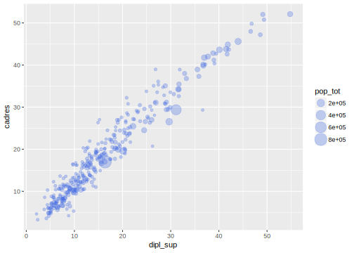
La règle est donc simple mais très importante :
Si on établit un lien entre les valeurs d’une variable et un attribut graphique, on définit un mappage, et on le déclare dans
aes(). Sinon, on modifie l’attribut de la même manière pour tous les points, et on le définit donc en-dehors de la fonctionaes().
8.5.3 geom_bar et position
Un des mappages possibles de geom_bar est l’attribut fill, qui permet de tracer des barres de couleur différentes selon les modalités d’une variable :
ggplot(rp) + geom_bar(aes(x = departement, fill = pop_cl))
L’attribut position de geom_bar permet d’indiquer comment les différentes barres doivent être positionnées. Par défaut on a position = "stack" et elles sont donc “empilées”. Mais on peut préciser position = "dodge" pour les mettre côte à côte :
ggplot(rp) + geom_bar(aes(x = departement, fill = pop_cl), position = "dodge")
Ou encore position = "fill" pour représenter non plus des effectifs, mais des proportions :
ggplot(rp) + geom_bar(aes(x = departement, fill = pop_cl), position = "fill")
8.6 facets
Le faceting permet d’effectuer plusieurs fois le même graphique selon les valeurs d’une ou plusieurs variables qualitatives.
Par exemple, on peut représenter l’histogramme du pourcentage de cadres :
ggplot(data = rp) +
geom_histogram(aes(x = cadres))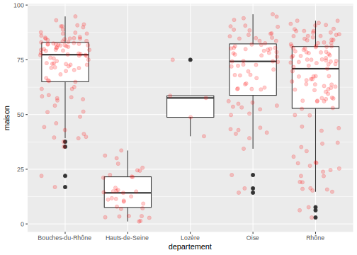
Mais on peut vouloir faire un histogramme pour chaque département. On peut dans ce cas utiliser facet_wrap ou facet_grid.
Les deux fonctions prennent en paramètre une formule. Pour facet_wrap, les différents graphiques sont affichés les uns à côté des autres et répartis automatiquement dans la page. La formule prend la forme ~variable :
ggplot(data = rp) +
geom_histogram(aes(x = cadres)) +
facet_wrap(~departement)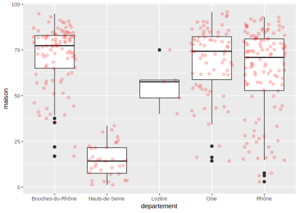
Pour facet_grid, les graphiques sont disposés selon une grille. La formule est de la forme variable en ligne ~ variable en colonne. Si on n’a pas de variable dans l’une des deux dimensions, on met un point (.) :
ggplot(data = rp) +
geom_histogram(aes(x = cadres)) +
facet_grid(.~departement)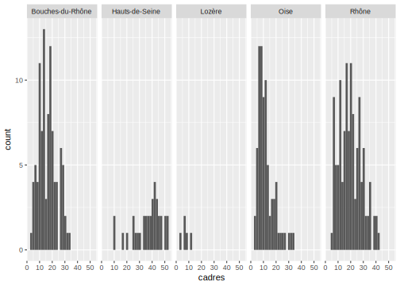
Enfin, on peut même faire du faceting sur plusieurs variables à la fois :
ggplot(data = rp) +
geom_histogram(aes(x = cadres)) +
facet_grid(pop_cl~departement)
8.7 scales
Dans ggplot2, on appelle scales la manière dont un attribut graphique va être relié aux valeurs d’une variable et dont la légende correspondante va être affichée. Par exemple, pour color, on définira la palette de couleur utilisée. Pour size, les tailles minimales et maximales, etc.
Pour modifier une scale existante, on ajoute un nouvel élément à notre objet ggplot2, qui prendra la forme scale_<attribut>_<type>.
8.7.1 scale_size
Par exemple, si on souhaite modifier les tailles minimales et maximales des objets quand on a effectué un mappage de type size, on peut utiliser :
ggplot(rp) +
geom_point(aes(x = dipl_sup, y = cadres, size = pop_tot)) +
scale_size(range = c(0,15))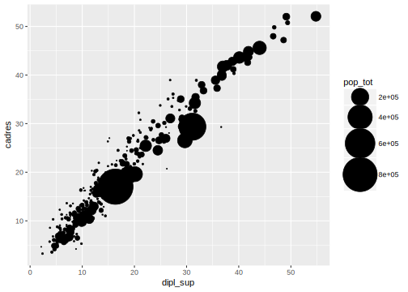
On peut ajouter d’autres paramètres. Le premier argument est toujours le titre donné à la légende :
ggplot(rp) +
geom_point(aes(x = dipl_sup, y = cadres, size = pop_tot)) +
scale_size("Population", range = c(0,15))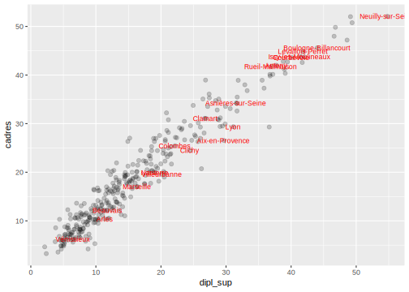
On peut aussi, de la même manière, définir manuellement les éléments de légende représentés :
ggplot(rp) +
geom_point(aes(x = dipl_sup, y = cadres, size = pop_tot)) +
scale_size("Population", range = c(0,15), breaks = c(1000,5000,10000,50000))
8.7.2 scale_x_*, scale_y_*
Les scales scale_x et scale_y modifient les axes x et y du graphique.
scale_x_continuous et scale_y_continuous s’appliquent lorsque la variable x ou y est numérique (quantitative).
ggplot(rp) +
geom_point(aes(x = dipl_sup, y = cadres)) +
scale_x_continuous("Diplômés du supérieur", limits = c(0,100))
On peut utiliser scale_x_log10 et scale_y_log10 pour passer un axe à une échelle logarithmique :
ggplot(rp) +
geom_point(aes(x = dipl_sup, y = cadres)) +
scale_x_log10("Diplômés du supérieur")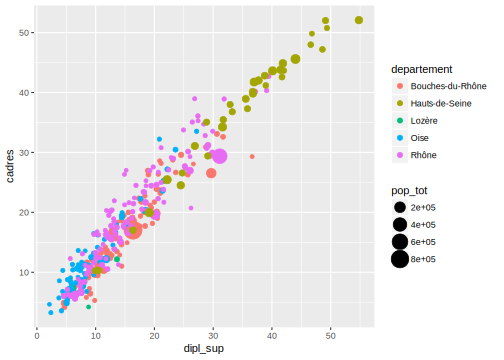
scale_x_discrete et scale_y_discrete s’appliquent lorsque l’axe correspond à une variable discrète (qualitative) :
ggplot(rp) +
geom_bar(aes(x = departement)) +
scale_x_discrete("Département")
L’argument limits permet d’indiquer quelles valeurs sont affichées et dans quel ordre.
ggplot(rp) +
geom_bar(aes(x = departement)) +
scale_x_discrete("Département", limits = c("Oise", "Lozère", "Seine-Saint-Denis"))## Warning: Removed 252 rows containing non-finite values (stat_count).
8.7.3 scale_color_*, scale_fill_*
Ces scales permettent entre autre de modifier les palettes de couleur utilisées pour le dessin (color) ou le remplissage (fill).
Si on colore des points selon une variable numérique :
ggplot(rp) +
geom_point(aes(x = dipl_sup, y = cadres, color = chom))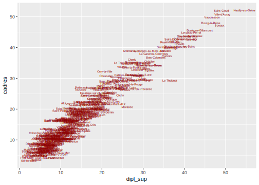
On peut modifier les couleurs utilisées avec scale_*_gradient :
ggplot(rp) +
geom_point(aes(x = dipl_sup, y = cadres, color = chom)) +
scale_color_gradient("Taux de chômage", low = "white", high = "red")
Si on a fait un mappage avec une variable discrète :
ggplot(rp) +
geom_density(aes(x = cadres, fill = departement), alpha = 0.5)On peut modifier la palette notamment avec scale_*_manual, scale_*_hue :
ggplot(rp) +
geom_density(aes(x = cadres, fill = departement), alpha = 0.5) +
scale_fill_manual("Département", values = c("red", "#FFDD45", rgb(0.1,0.2,0.6), "darkgreen", "grey80"))
Les scales scale_*_brewer sont très pratiques, elles récupèrent des palettes depuis le site Colorbrewer. Les palettes en question, initialement prévues pour la cartographie, permettent une bonne lisibilité, et peuvent être adaptées pour certains types de daltonisme.
ggplot(rp) +
geom_density(aes(x = cadres, fill = departement), alpha = 0.5) +
scale_fill_brewer("Département", palette = "Accent")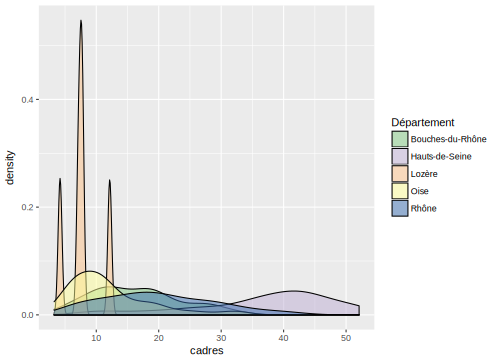
Il existe de nombreuses autres méthodes pour définir les couleurs, se reporter à la documentation officielle.
8.8 Thèmes
Les thèmes permettent de contrôler l’affichage de tous les éléments du graphique qui ne sont pas reliés aux données : titres, grilles, fonds, etc.
Il existe un certain nombre de thèmes préexistants :
ggplot(data = rp) +
geom_histogram(aes(x = cadres)) +
theme_bw()## `stat_bin()` using `bins = 30`. Pick better value with `binwidth`.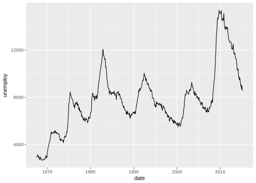
ggplot(data = rp) +
geom_histogram(aes(x = cadres)) +
theme_minimal()## `stat_bin()` using `bins = 30`. Pick better value with `binwidth`.Mais tous les éléments sont personnalisables. Un bon moyen de se familiariser avec tous les arguments est sans doute l’addin RStudio ggThemeAssist. Pour cela il suffit d’installer le package en question, de sélectionner dans son script RStudio le code correspondant à un graphique ggplot2, puis d’aller dans le menu Addins et choisir ggplot Theme Assistant. Une interface graphique s’affiche alors permettant de modifier les différents éléments. Si on clique sur Done, le code dans le script est alors automatiquement mis à jour par le code correspondant aux modifications effectuées.
Ce qui permet d’obtenir très facilement des résultats extrêmement moches :
ggplot(data = rp) + geom_histogram(aes(x = cadres)) +
theme(panel.grid.major = element_line(colour = "dodgerblue",
size = 0.5, linetype = "dotdash"), axis.title = element_text(family = "serif",
size = 18, face = "italic", colour = "white"),
axis.text = element_text(family = "serif",
size = 15, face = "bold"), axis.text.x = element_text(family = "mono"),
plot.title = element_text(family = "serif"),
legend.text = element_text(family = "serif"),
legend.title = element_text(family = "serif"),
panel.background = element_rect(fill = "coral"),
plot.background = element_rect(fill = "blueviolet"))## `stat_bin()` using `bins = 30`. Pick better value with `binwidth`.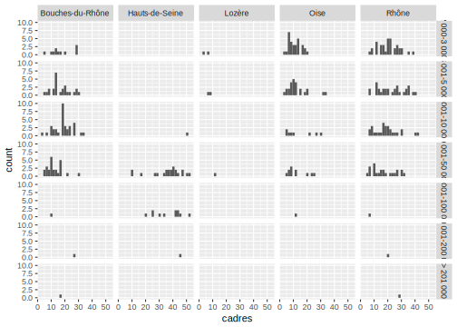
Enfin, les fonctions ggtitle, xlab et ylab permettent d’ajouter ou de modifier facilement un titre de graphique, ainsi que ceux des étiquettes des axes x et y :
ggplot(data = rp) +
geom_histogram(aes(x = cadres)) +
ggtitle("Un bien bel histogramme") +
xlab("Pourcentage de cadres") +
ylab("Effectif")## `stat_bin()` using `bins = 30`. Pick better value with `binwidth`.
8.9 Ressources
La documentation officielle (en anglais) de ggplot2 est très complète et accessible en ligne : http://ggplot2.tidyverse.org/index.html
Une “antisèche” (en anglais) résumant en deux pages l’ensemble des fonctions et arguments et disponible soit directement depuis RStudio (menu Help > Chetasheets > Data visualization with ggplot2) ou en ligne à l’adresse suivante : https://www.rstudio.com/resources/cheatsheets/
La partie Data visualisation de l’ouvrage en ligne R for data science, de Hadley Wickham, est une très bonne introduction à ggplot2 : http://r4ds.had.co.nz/data-visualisation.html
Enfin, plusieurs ouvrages, toujours en anglais, abordent en détail l’utilisation de ggplot2, en particulier ggplot2: Elegant Graphics for Data Analysis, de Hadley Wickham : http://www.amazon.fr/ggplot2-Elegant-Graphics-Data-Analysis/dp/0387981403/
Et le R Graphics Cookbook de Winston Chang : http://www.amazon.fr/R-Graphics-Cookbook-Winston-Chang/dp/1449316956
Le site associé à ce dernier ouvrage comporte aussi pas mal d’exemples et d’informations intéressantes : http://www.cookbook-r.com/Graphs/
8.10 Exercices
Pour les exercices qui suivent, on commence par charger les extensions nécessaires et les données du jeu de données rp2012. On crée alors un objet rp69 comprenant uniquement les communes du Rhône et de la Loire.
library(tidyverse)
library(questionr)
data(rp2012)
rp69 <- filter(rp2012, departement %in% c("Rhône", "Loire"))Exercice 1
Faire un nuage de points croisant le pourcentage de sans diplôme et le pourcentage d’ouvriers.
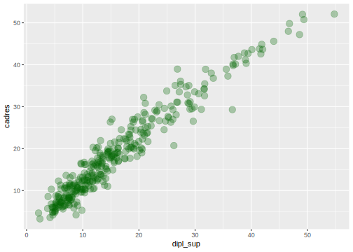
Exercice 2
Faire un nuage de points croisant le pourcentage de sans diplôme et le pourcentage d’ouvriers, avec les points en rouge et de transparence 0.2.

Exercice 3
Représenter la répartition du pourcentage de propriétaires selon la taille de la commune en 5 classes (variable pop_cl) sous forme de boîtes à moustache.
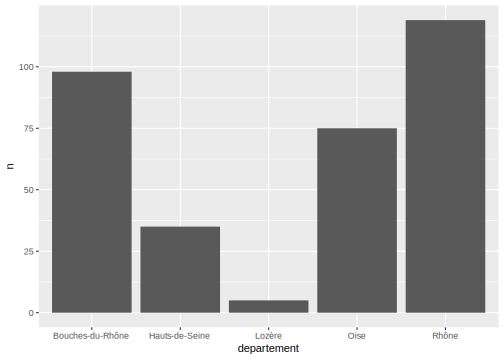
Exercice 4
Représenter la répartition du nombre de communes selon la taille de la commune en 5 classes sous forme de diagramme en bâtons.

Exercice 5
Faire un nuage de points croisant le pourcentage de sans diplôme et le pourcentage d’ouvriers. Faire varier la couleur selon le département et la taille selon la population totale. Mettre une transparence de 0.5.

Exercice 6
Représenter la répartition du nombre de communes selon la taille de la commune en 5 classes sous forme de diagramme en bâtons, avec une couleur différente selon le département.
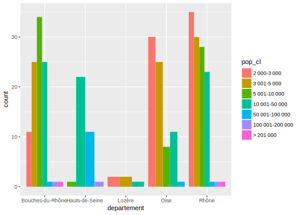
Faire varier la valeur du paramètre position pour afficher les barres les unes à côté des autres.
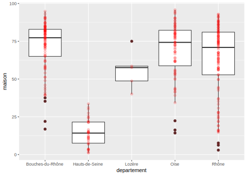
Changer à nouveau la valeur du paramètre position pour représenter les proportions de communes de chaque département pour chaque catégorie de taille.
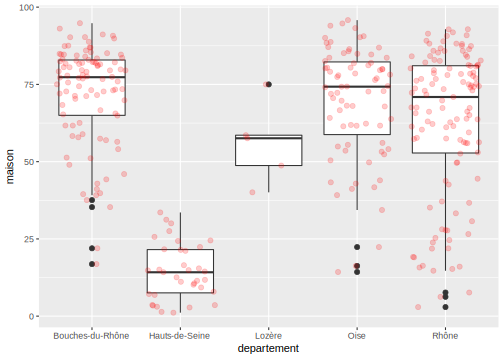
Exercice 7
Faire le nuage de points du pourcentage de cadres par le pourcentage de diplômés du supérieur. Représenter ce nuage par deux graphiques différents selon le département en utilisant facet_grid.
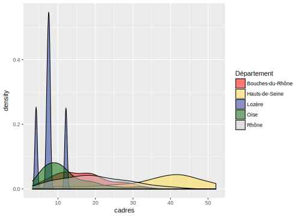
Exercice 8
Faire le nuage de points croisant pourcentage de chômeurs et pourcentage de sans diplôme. Y ajouter les noms des communes correspondant, en rouge et en taille 2.5 :
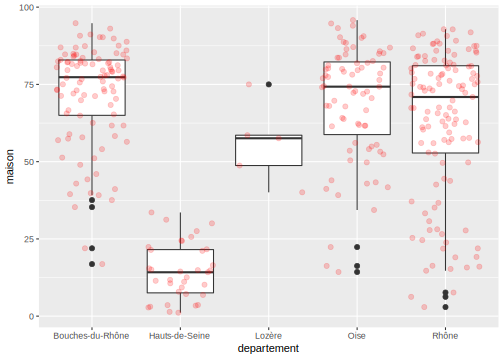
Exercice 9
Dans le graphique précédent, n’afficher que le nom des communes ayant plus de 15% de chômage.
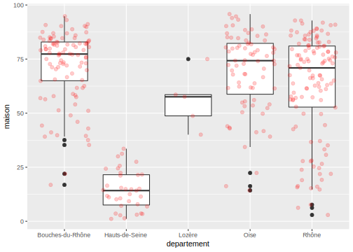